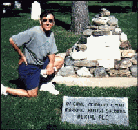

About the Author, David Lodge |
| Author of Sir Winston Churchill - A Legend in His Own Time, Sir Philip Sidney, A Renaissance Man, David Lodge
is now a naturalized American citizen but he was born and raised in Manchester, England.
He served two years in the Royal Air Force prior to coming to the United States to live
with his family and mother, who had married an American G.I. soldier during World War II. A
former member of the Shelby County Historical Society, David helped develop the
award-winning JUST FOR KIDS program.
He is interested in all types of history with Winston Churchill a personal hero.
Employed at Amos Press, David writes regular columns for the publication, Scott Stamp
Monthly.
David and his wife, Sherrie, are both active in the
theater and regularly portray turn-of-the century living history characters, GreatStone Castle owners, W.H.C. and Ida Goode.
In 1997/98, David authored three of eight Society's teacher's guides covering the topics
of Immigration, Indians and Black history. In 1999, he and his wife
partnered to write "It’s History To Keep," a 52-page booklet documenting
the history of 15 significant historical structures in Sidney. |

Contact
Author
RETURN |
|
|